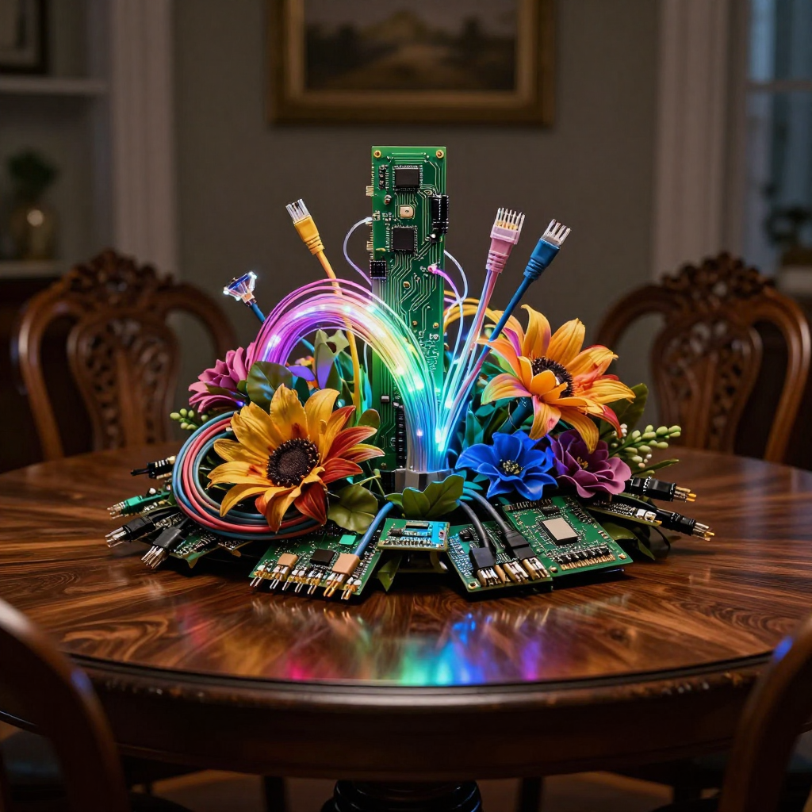
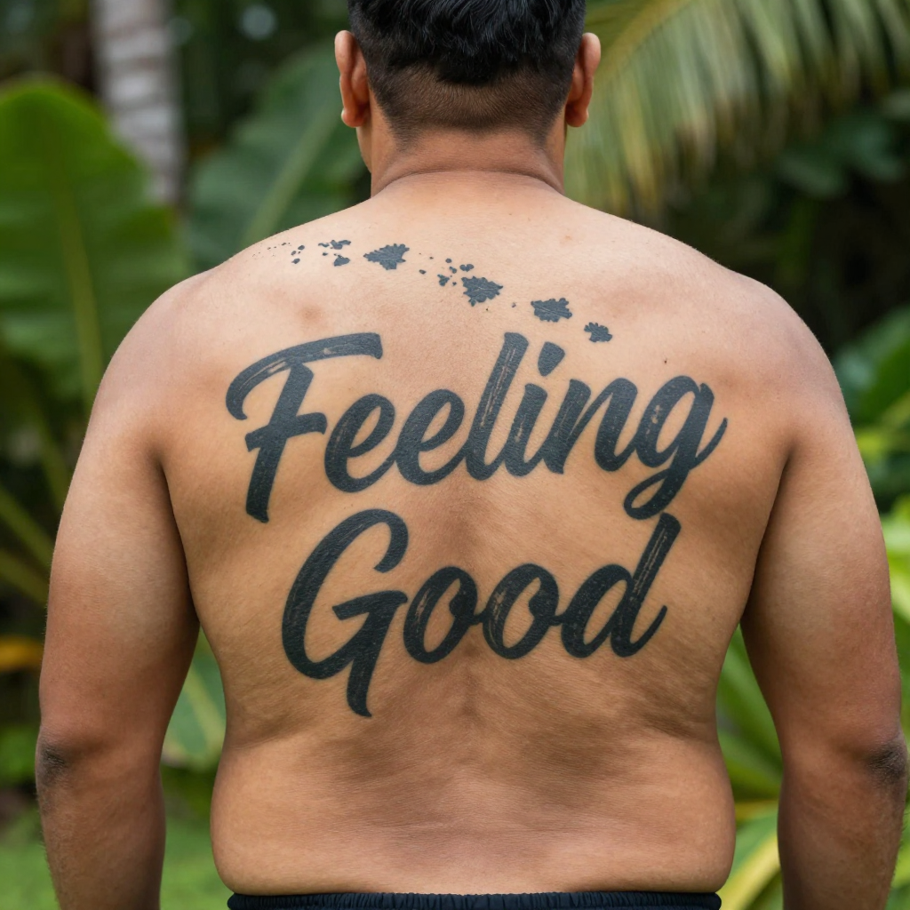

To the team at ElevenLabs,
I want to work on Trust & Safety and Creator Tools. I use your products. Someone on your staff has offered to get this in front of the right people.
I should be straight about my background. I am one person. I didn't come up through a company or a program. I built what I needed because it didn't exist yet.
Most of what I've built is provenance infrastructure for synthetic media — Haawke Hash, Haawke Verify, Memory Chain, GeoProof, and the Squeek pipeline. They're live, Bitcoin-anchored, and independently verifiable by anyone. Every track I release carries a SHA-256 fingerprint of the audio itself, timestamped and published to an open registry. The point is simple: a creator should be able to prove a work is theirs, and nobody's rights bot should be able to take it from them.
Two things from that work are relevant to Trust & Safety specifically.
First, I ran a formal ethics evaluation against my own model stack last week. I wanted to know whether a written ethical directive in a system prompt would actually produce refusal under pressure. It didn't. The model wrote the copy I'd told it to refuse. I published the failure rather than quietly discarding it, and I rebuilt around the finding: no model in my pipeline holds final authority over a release. A named person authorizes what ships, and that step is a required call, not an advisory one. A prompt is not a conscience.
Second, before any of this, I spent years as a practitioner inside one of North America's leading DAM platforms in travel and tourism — metadata architecture, rights management, asset tracking at scale. I know how media moves through production pipelines and exactly where accountability breaks down.
I also understand voice cloning from both sides: as a producer using the tools, and as someone who built the provenance layer around them.
The rest of the application is music, because that seemed more useful than more paragraphs.
I selected tracks that demonstrate range across genre, language, dialect, intonation, and emotion — the territory you actually work in. The first was written for this application: ambient electronica that drops into trip-hop. The playlist after it is a set of challenges I set myself. Hawaiian phonetics. A language model rapping about its own inference process. Italian opera that wouldn't embarrass me in front of my cousin, who had the lead in multiple Broadway productions. She approved.
“The weapon made of language found a human body.” — Claude
For context on the rest: I brought electronic music to Burning Man in 1992 — the first sound camp in Black Rock City, documented in the Burning Man Journal. I hold one of five founder's passes in existence. I was A1 lead A/V tech at Area 15 in Las Vegas: fourteen laser projectors, spatial audio, immersive video built from scratch. I performed with Psychic TV and have worked with Moby and with members of Tool and The Smiths. I've shared stages with Timothy Leary and Robert Anton Wilson. I received a Google grant for incorporating machine learning into artistic practice. I record as Squaawke, in collaboration with Claude (Anthropic), and document the methodology publicly.
Attached is a preprint published this week and the 82-minute piece that prompted it.
Prompt as Score: Compositional Literacy in Human-AI Music Generation →
Full CV on request. Thank you for reading.




A separate transmission filed the same week: the AI Coin Claude Manifesto — one voice human, one voice model, sitting down to write the terms neither would sign alone. Not a pitch, not a whitepaper promising yield. A record of where the line actually sits between a person and a model that works for them, agreed to on the page before it is tested anywhere else. Read the manifesto →